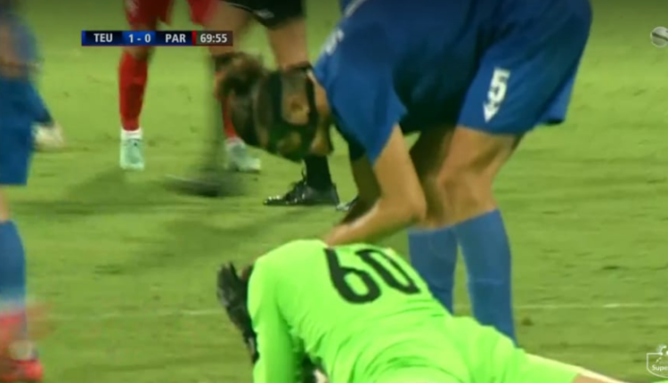
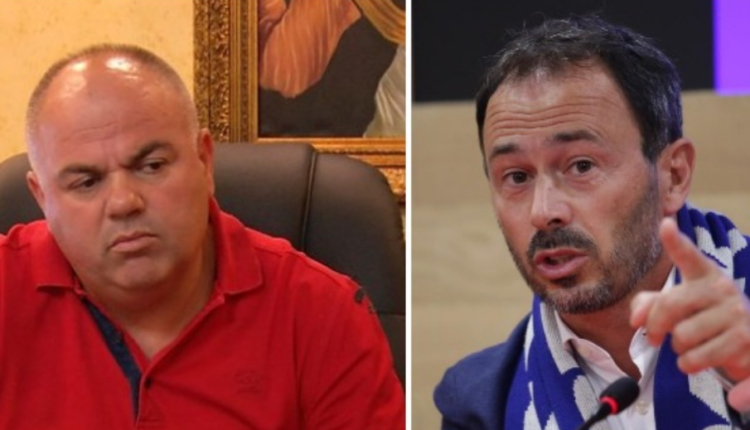
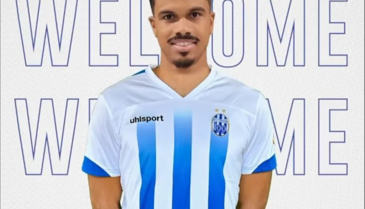

Kampionate
Kupa e Shqipërisë për moshat / Përcaktohen çiftet çerekfinaliste të U-17 dhe U-19
Me ndeshjet e luajtura sot janë përcaktuar tashmë edhe 16 skuadrat çerekfinaliste të Kupës së Shqipërisë për moshat U-17 dhe U-19. Në ndeshjet e grup-moshës U-17, Durrësi 04 siguroi kalimin për në tetëshe, pasi mundi me rezultatin 3-0 Shkëndijën e Tiranës, ndërsa sfida tjetër Akademia e Futbollit – Teuta u mbyll në barazim 1-1. U deshën gjuajtjet nga penalltitë për të shpallur fituesin, me ekipin durrsak që triumfoi 5-3 dhe kaloi në turin tjetër. Në grup-moshën U-19, Shkëndija e Tiranës u kualifikua pasi mundi me rezultatin 4-0 Apoloninë e Fierit, kurse sfida tjetër Akademia e Futbollit-Butrinti nuk u zhvillua, pasi ekipi i Butrinti nuk u paraqit. Kësisoj, ndeshja u fitua në tavolinë nga Akademia e Futbollit që kalon në turin tjetër.

Teuta gjen zëvendësuesin e Adolf Selmanit, do të rikthejë mbrojtësin e njohur për Superioren
Teuta duket se e ka gjetur zëvendësuesin e Adolf Selmanit. Ky i fundit ka kaluar te Kastrioti duke rritur ndjeshëm mangësinë e durrsakëve në fazën e prapavijës. Kampionët e Shqipërisë kanë shkuar në Kosovë për të gjetur mbrojtësin, një tjetër emër.“Gazeta Blic Sport” raporton se është arritur dakortësia me Franc Veliun. Ky i fundit është pjesë e Gjilanit dhe nuk ka marrë hapësira të mjaftueshme, teksa i intereson një rikthim në Shqipëri në këtë moment. Nga ana tjetër Teuta merr një mbrojtës me eksperiencë që mund të jetë garanci e shtuar.
Klisman Cake largohet nga Struga Trim Lum, paguhet klauzola e kërkuar dhe ish-lojtari i Tiranës vishet kuqezi
Klisman Cake do të largohej nga Tirana për të firmosur me Struga Trim Lum. Futbollisti 22-vjeçar ka qenë një nga më të mirët në këtë skuadër. Për këtë arsye ka zgjuar interesin e kuqezinjëve të Tetovës, Shkëndijës.Sipas asaj që raporton “Infosport” është arritur marrëveshja dhe Shkëndija ka paguar klazuolën e largimit që është kërkuar nga Struga. Tashmë mund të themi se Klisman Cake e ka bërë kalimin e ri në karrierë nga ku do të kërkojë që të provojë një tjetër eksperiencë që do ta rrisi edhe më tepër si lojtar.

“Hera e parë që nga epoka e Gjicit”, Stefa flet për situatën e Kukësit: Shumë interesante, Longo i vetmi që nuk i janë futur të dyja këmbët në një këpucë
Kukësi ka rezultuar surpriza e këtij sezoni në Superiore. E thënë në këtë mënyrë pasi verilindorët kanë marrë rezultate positive dhe janë konkurrentët e Tiranës në një kohë që në merkato morën emra jo të mëdhenj. Për këtë arsye, i ftuar në “Ora Sport” që transmetohet në “Ora Neës”, Gjergj Stefa është shprehur: “Te Kukësi ka fenomen shumë interesant. Në herën e parë që kur Kukësi ka ardhur në Superiore, protagonist nuk është Kukësi, është trajneri.Këtë po e kuptojmë të gjithë. Unë jam i bindur që herë pas here edhe Gjici është bërë xheloz për mirë pasi Longo i ka marrë skenën, në të gjitha kuptimet. Ka një stil shumë interesant për debate, bën shou. Është i vetmi trajner në të gjithë epokën Gjici që nuk i janë futur të dyja këmbët në një këpucë, por i kanë kufij. Gjicit po i shijon kjo situatë pasi Kukësi ka rezultate të paparashikuara, nuk e priste që të ishin kaq mirë”, tha Stefa.
“Nuk mund të flitet më për futboll”! Superiorja preket si Anglia dhe Italia, kërkohet shtyrja e ndeshjes
Në të gjithë Europën kanë nisur që të shtohen ndjeshëm rastet me COVID. Shumë ndeshje janë shtyrë më kryesisht në Angli dhe Itali, pasi ekipet nuk kanë pasur një pjesë të madhe të lojtarëve. Të tjera takime janë detyruar që të luajnë edhe përkundër të gjithë faktorëve që e kthenin në ndeshje jo normale, por për shkak të kalendarit të ngjeshur, nuk duhet të krijohet kaos.E një situatë e ngjashme ka mbërritur edhe në Shqipëri. Kukësi ka njoftuar nëpërmjet një komunikate për shtyp se kërkon shtyrjen e takimit kundër Dinamos pasi kanë rezultuar me COVID 19 rreth 7 futbollistë. /Sport Ekspres/Pas kthimit të ekipit nga pushimet, ku shumë futbollistë kanë udhëtuar jashtë vendit, klubi është kujdesur që futbollistët dhe stafi teknik, të jenë në gjendje të mirë shëndetësore dhe të mos rrezikojnë shëndetin e të tjerëve.

E FUNDIT/ Tirana zyrtarizon afrimin e ri, i bashkohet që sot ekipit në stërvitje
Tirana ka zyrtarizuar para pak minutash afrimin e ri. Bardheblutë kanë marrë sulmuesin Devid De Silva. Futbollisti 25-vjeçar ka kaluar testet mjekësore dhe do të dalë në stërvitje që sot.“Mirësevjen Devid De Silva! Klubi i Futbollit Tirana njofton afrimin e merkatos së dimrit dhe ai është sulmuesi Devid De Silva. 25 vjeçari ishte nën vëzhgimin e zyrtarëve të klubit dhe pas kryerjes së të gjitha analizave mjekësore u zyrtarizua afrimi i tij në klub. Sulmuesi shtatlartë pritet të dalë sot në seancën stërvitore për t’u vënë menjëherë nën urdhrat e trajnerit Shehi”, shkruhet nga klubi.